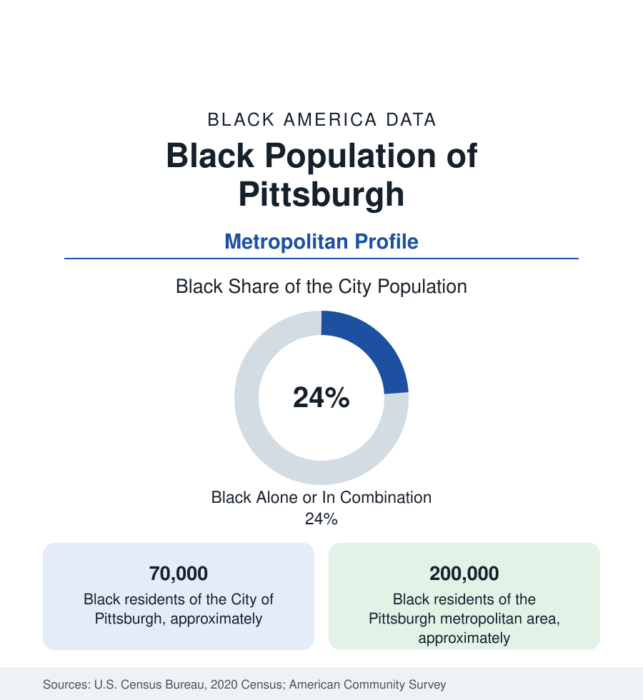

Black Cities
Black Pittsburgh: The Hill District and August Wilson's City
Pittsburgh holds about 70,000 Black residents in the city and 200,000 across the metro — from the Hill District's jazz age to the East End's present. The census profile.

Pittsburgh holds about 70,000 Black residents within the city — Black alone or in combination, roughly a quarter of its 303,000 people — and about 200,000 across the metropolitan area of the Monongahela and Allegheny valleys. Black Pittsburgh's cultural weight exceeds its count by any measure: the Hill District of the jazz age was one of Black America's capitals, August Wilson chronicled the city in the century's defining American play cycle, and the Pittsburgh Courier was, at its peak, the most widely read Black newspaper in the nation. The data profile runs from that height through steel's collapse to the eds-and-meds present.
The Hill and the Courier
The Hill District — the ridge above downtown — was Black Pittsburgh's world from the late nineteenth century: at its height perhaps 50,000 people of many origins in the Lower Hill's density, with Centre Avenue's clubs (the Crawford Grill, whose stage was a jazz landmark), the Courier's offices (Robert Vann's paper reached a national circulation in the hundreds of thousands and ran the Double V campaign from Pittsburgh), churches, and the NAACP's strong local chapter. The demolition of the Lower Hill in the late 1950s for the Civic Arena — some 8,000 residents displaced, overwhelmingly Black — is the canonical American urban-renewal wound, studied and cited wherever this reference's clearance files are compiled; the arena itself was demolished a half-century later, and the 28-acre site's redevelopment, negotiated with the Hill's community organizations at the table with enforceable agreements, is the current era's test of whether the sequel differs. The Upper Hill (Sugar Top), Beltzhoover, and the adjoining East End districts — Homewood, Larimer, Lincoln-Lemington, East Liberty, Garfield — hold the modern concentration, with Homewood the district whose indicators anchor the city's equity data.
Steel's Valley Geography
The metro's Black map follows the mills. The Mon Valley towns — Braddock (among the most storied Black mill towns, Andrew Carnegie's first steel works' home, now in a famous long recovery), Homestead, Duquesne, McKeesport, Rankin (a majority-Black borough) — and the Ohio valley's Aliquippa hold Black communities built by the furnaces, whose post-collapse data are the region's hardest: several Mon Valley towns lost half to two-thirds of their populations, and their Black districts' indicators sit at the state file's floor beside Philadelphia's peaks. Within the city, the steel-and-rail working class gave way to the eds-and-meds economy (UPMC, the universities) whose Black workforce follows the healthcare profile, and the tech layer (Carnegie Mellon's robotics economy) whose Black share follows the STEM file — thin. The result is the metro's signature split: a nationally envied innovation economy whose prosperity the Black districts touch mainly as service workers, documented in the region's own equity reports with unusual candor.
August Wilson's Ledger and the Institutions
Wilson's ten-play Century Cycle — nine of them set in the Hill — constitutes the most complete literary record any American Black district has, and the August Wilson African American Cultural Center downtown is its institutional deposit. The wider layer: the Courier's successor (the New Pittsburgh Courier publishes on), the Kuntu and Black theatre traditions, the universities' Black studies programs, and a Black church geography centered in the Hill and Homewood. The cultural data point that cuts the other way: Pittsburgh's Black arts scene operates in a metro whose overall population has been shrinking or flat for decades, so the institutions run at a scale the current demography strains to support — the legacy-city arts economics of the Detroit file at smaller scale.
Change and the Estimates
The estimates show the region's Black population roughly stable — suburban increments (Penn Hills, the metro's largest Black suburb; Wilkinsburg, the independent borough in a long integration-and-reinvestment story; Monroeville and the airport corridor) against thinning mill towns and a city whose Black share eases as the East End appreciates. East Liberty's transformation (from a Black commercial district to a tech-retail hub in a decade) is the city's gentrification case study, filed beside the Hill's redevelopment as the two futures the data offer. The age structure is among the oldest in this section — the mill generation's retirees, the youth out-migration of the flat decades — with the universities' student layer the counterweight.
Reading the Pittsburgh Numbers
Pittsburgh is the profile where American culture keeps unusually complete receipts: a jazz capital, the Black press's loudest voice, and the century's great play cycle all from one district the city then demolished. The 200,000 Black residents of the metro tables live among those receipts — in the Hill's negotiated rebuilding, Homewood's hard indicators, and Braddock's long valley — in a region still deciding whether its celebrated reinvention includes them.
More in Black Cities
Black Atlanta: Population, Distribution, and Growth of a Black Metropolis
Metro Atlanta holds more than two million Black residents — roughly one in three, second only to New York. The suburban distribution, migration history, and composition of Black Atlanta in the census data.
Black New York: The Largest Black Population in America
The New York metropolitan area holds about 3.4 million Black residents — more than any metro in the nation — and the city itself about two million. The census profile.
Black Washington: The District and the Metro
The Washington metro holds about 1.6 million Black residents, and the District itself — long a majority-Black city — now records a Black share near 41 percent. The census profile.
Source: U.S. Census Bureau, 2020 Census; American Community Survey; Population Estimates Program.